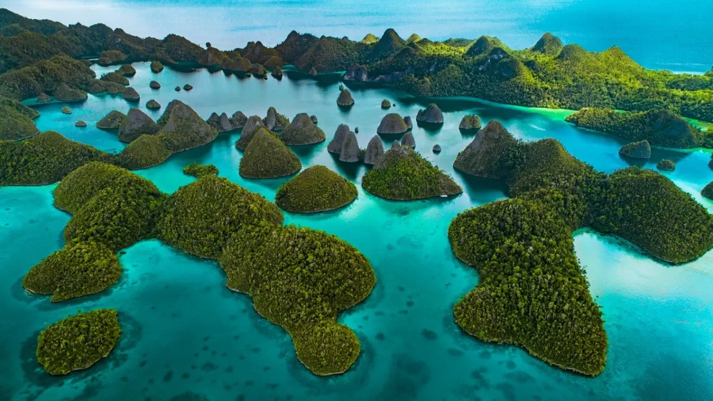
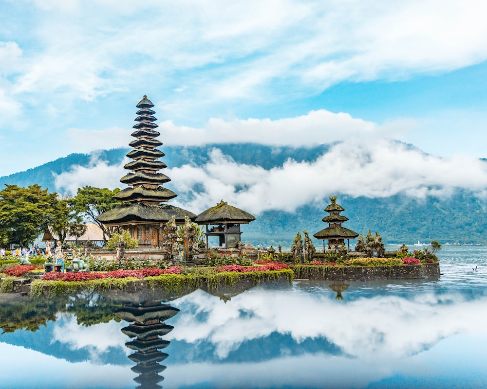
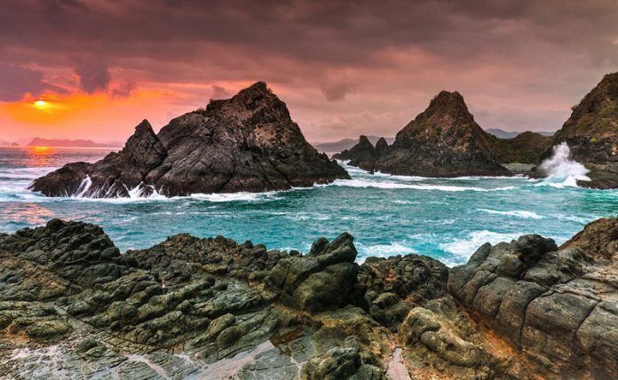
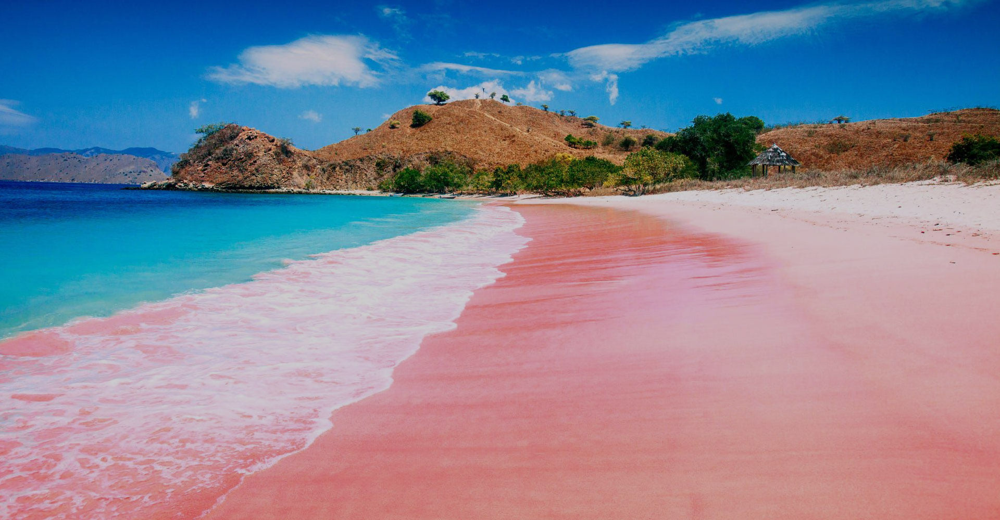
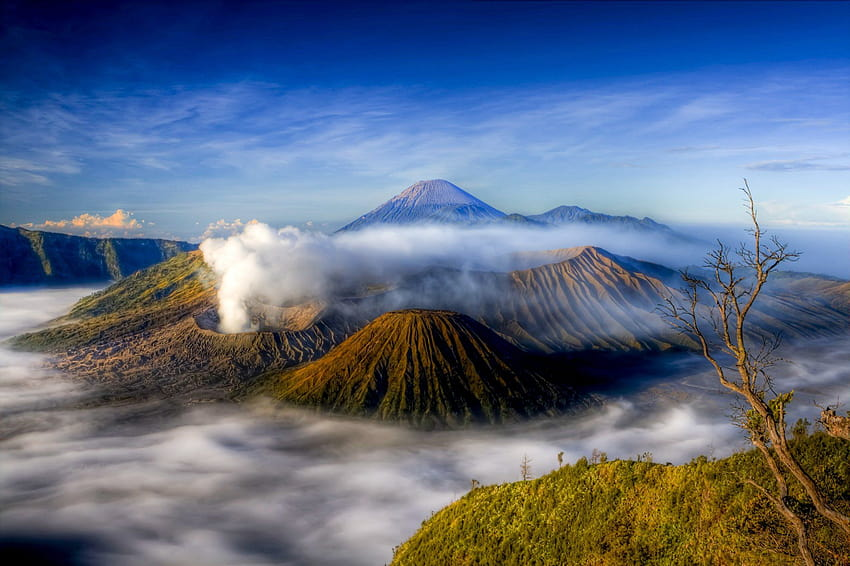

PAPUA
The beauty of Papua is a raw and untamed paradise, where majestic mountains pierce the sky and dense jungles teem with biodiversity. Its rugged landscapes, punctuated by cascading waterfalls and pristine rivers, paint a breathtaking backdrop for traditional villages adorned with intricate carvings and vibrant tribal rituals. The vibrant and diverse indigenous cultures that call Papua home contribute to its allure, with their unique languages, customs, and artistry. This remote corner of the world exudes an enchanting aura, offering a glimpse into a world untouched by time and a testament to the enduring splendor of our planet's most untouched realms.
BALI
The beauty of Bali is a captivating symphony of lush landscapes and cultural richness, where emerald rice terraces cascade down hillsides and pristine beaches meet crystal-clear waters. Ancient temples, adorned with intricate sculptures and adorned with vibrant offerings, stand as serene testaments to spiritual devotion. The island's enchanting traditions come to life through mesmerizing dance performances and elaborately woven textiles. Bali's harmonious blend of nature and culture creates an idyllic haven, inviting travelers to immerse themselves in its tranquil beauty, find solace in its spiritual essence, and revel in the warmth of its people's genuine hospitality.
LOMBOK
The beauty of Lombok is a captivating harmony of rugged landscapes and serene shores, where dramatic volcanic peaks rise against the horizon and white-sand beaches embrace the turquoise sea. Cascading waterfalls and lush forests create an enchanting backdrop for traditional villages where skilled artisans weave intricate textiles and celebrate rich cultural rituals. Lombok's untouched charm and tranquil ambiance invite exploration and contemplation, offering a glimpse into a world of both natural splendor and cultural authenticity that lingers in the hearts of those fortunate enough to experience its allure.
PINK BEACH
The beauty of Pink Beach in Labuan Bajo is a surreal blend of nature's artistry and stunning coastal landscapes, where powdery pink sands meet the crystal-clear waters of the Flores Sea. This rare and mesmerizing phenomenon, caused by the delicate interplay of coral fragments and white sand, creates a captivating and ethereal ambiance. Nestled against a backdrop of rolling hills and lush greenery, Pink Beach offers a unique and unforgettable tropical escape, inviting visitors to bask in the gentle ocean breeze, explore vibrant marine life while snorkeling, and be captivated by the unparalleled magic of this otherworldly paradise.
JAVA
The allure of Java lies in its captivating juxtaposition of ancient heritage and dynamic modernity, where bustling cities like Jakarta and Yogyakarta coexist harmoniously with serene rice terraces, mist-covered volcanoes, and lush jungles. Iconic UNESCO sites like Borobudur and Prambanan showcase intricate architecture and spiritual reverence, while vibrant markets and lively street scenes pulse with the rhythm of everyday life. Java's rich cultural mosaic is beautifully woven through traditional dances, melodious gamelan music, and sumptuous culinary traditions, inviting travelers to explore a realm that seamlessly marries centuries-old traditions with the energy of a rapidly evolving society, creating an enchanting and ever-evolving tapestry of beauty and fascination.